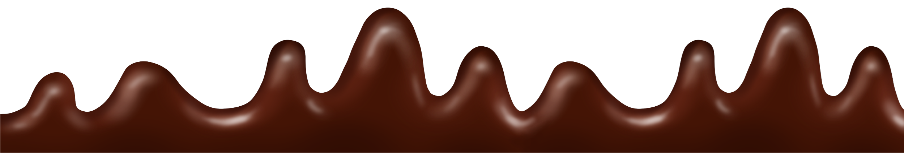

chocoland
chocoland
The traditional favourites are available, including smooth milk chocolate, rich dark chocolate, and sweet white chocolate. ... Sri Manikanta Pavan Parlour, Rajamundry.
Cadbury Dairy Milk is a British brand of milk chocolate manufactured by Cadbury. It was introduced in the United Kingdom in June 1905 and now consists of a number of products. Every product in the Dairy Milk line is made with exclusively milk chocolate. In 1928, Cadbury's introduced the "glass and a half" slogan to accompany the Dairy Milk chocolate bar, to advertise the bar's higher milk content.
Bournville is a brand of dark chocolate produced by Cadbury. It is named after the model village of the same name in Birmingham, England The first product bearing the Bournville name was Bournville Cocoa powder in 1906 then Bournville Chocolate in 1908.[1] It was first sold as a wrapped bar named Bournville Chocolate in 1908.
Amul Dark Chocolate is made with the finest ingredients and rich cocoa. Its strong flavour and silky texture is just what you need to fall in love with pure ...Amul double chocolate milkshake is a delicious dairy-based drink rich in nutrients. This milkshake gives the best quality. It does not require refrigeration ...
Amazon.in: Buy delicious Chocolates at Amazon.in. Shop Chocolate Boxes, Bars, Confections from popular brands including Cadbury, Ferrero and many more.
Rajamundry,NH-16,Westgodavari,INDIA.
THANK YOU.
